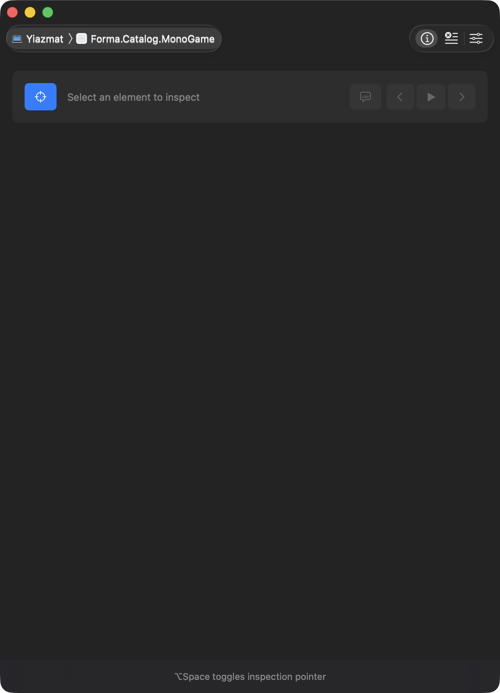
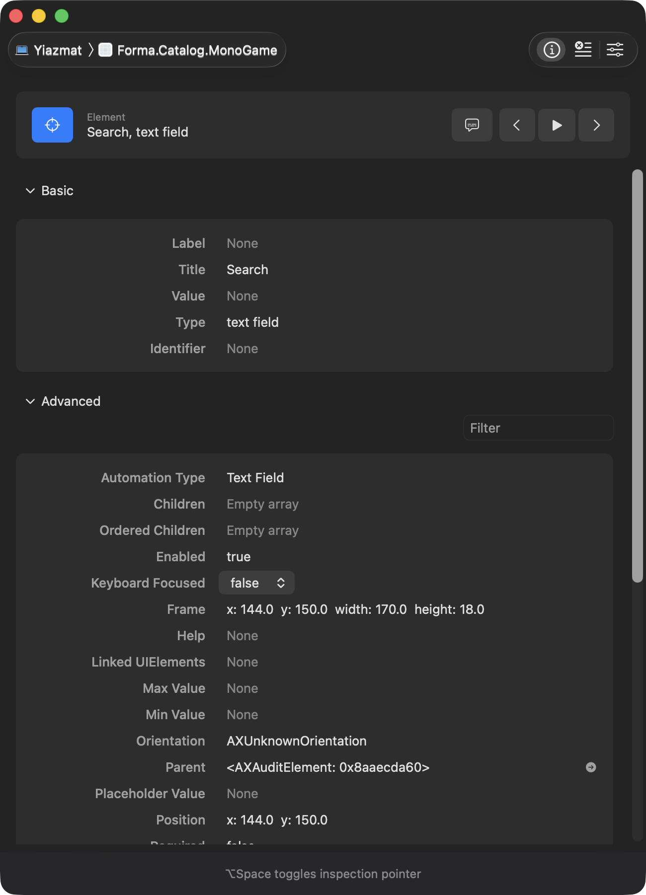
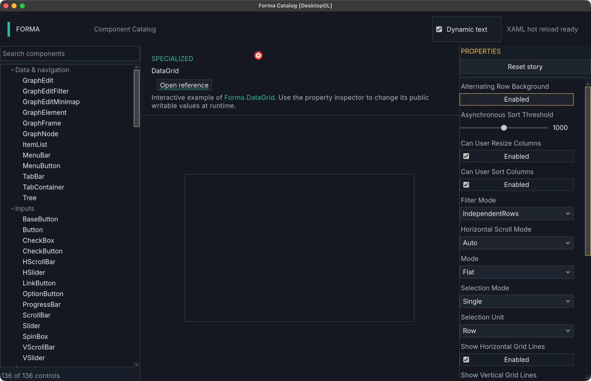

Accessibility
Forma draws its own controls, so to the operating system a Forma window is one opaque rectangle. A screen reader announces nothing; an automation client or computer-use agent sees a picture. This page is about closing that gap.
There are two layers, and most readers want the first one only:
- The tree —
AccessibilityTree.Capture(context)describes every visible control: role, name, automation id, value, states, actions, bounds. It works everywhere, needs no native library, and is whatForma.Testingdrives. If your interest is testing, stop here and read that page instead. - The bridge —
Forma.Accessibilitypublishes that tree through the operating system's own accessibility API, so processes outside your application can see it. macOS only today.
The tree
Every control has an AccessibilityPeer reporting a role, a name, its supported actions and its
state. AccessibilityTree.Capture walks the visible tree and returns a flat, ordered
AccessibilityTreeSnapshot — depth-first in draw order, so reading it top to bottom matches what a
person sees.
Two things make a control findable:
AutomationId— a stable author-assigned handle. Invisible to the operating system; used by locators and by your own tooling.- The accessible name — what a screen reader announces, and what an agent addresses the control
by. It comes from
AccessibilityLabelif set, otherwise from the control's own text (a button's label, a label's text), otherwise fromControl.Name.
A control with an AutomationId and no name is reachable from your tests and invisible to the
operating system. Sliders are the usual casualty: they have no text of their own, so unless you set
AccessibilityLabel they arrive as an unnamed slider that nothing outside the process can address.
AccessibilityTree.TryPerformAction(context, nodeId, action, argument) runs an action through the
control's own peer. The action must be one the control advertises — an external caller must not be
able to reach behavior a person cannot, which is the point of describing the tree in the first
place.
The bridge
_accessibility = new AccessibilityBridge(_ui) { WindowTitle = Window.Title };
_accessibility.Attach(Window.PlatformHandle);
// each frame, after layout has settled:
_accessibility.Update();
Attach returning false is a normal outcome, not an error: this platform has no host, there is no
window (a headless runtime), or the native library is missing. The application carries on exactly as
before. Nothing costs anything until an assistive technology actually activates the tree — until
then Update is one native call per frame.
The handle must be the operating system's window, not the windowing backend's. In MonoGame that
is GameWindow.PlatformHandle; GameWindow.Handle is the SDL_Window* and is the wrong thing to
hand to a Cocoa API.
Scope
macOS, through AccessKit. Windows and Linux adapters exist upstream but are not wired up here; see ADR 0008 for why the platform seam is shaped the way it is, and why Linux is a weaker proposition than "not yet done". The browser target cannot be served this way at all.
Role mapping
AccessibilityRole maps onto AccessKit's much larger role set. Three mappings are lossy, and they
are lossy in the direction of announcing something rather than nothing:
| Forma role | AccessKit role | Why it is lossy |
|---|---|---|
ColorPicker |
ColorWell |
A well is a single swatch; the picker is a composite. It is what a native color control reports, so it announces correctly. |
Viewport |
Group |
An embedded scene is not a document or an image. Group at least announces a container with children. |
Joystick |
Slider |
A two-axis continuous input announced as one axis. Closer than a generic container, which would announce nothing about its value. |
Press and Toggle both map to AccessKit's Click: macOS has one AXPress, and the distinction
Forma draws is about what the control does with it rather than about what was asked.
What it looks like
With no bridge, the operating system sees a Forma application as its window and nothing else — the whole UI is one rectangle:

With the bridge attached, the same application's controls are elements the system can name, locate and act on. Here Accessibility Inspector is pointed at the Catalog's search field:

Both were produced by tools/a11y-probe/capture_inspector.py, which drives Accessibility Inspector
rather than asking someone to take a screenshot:
python3 tools/a11y-probe/capture_inspector.py --pid $PID --out before.png
python3 tools/a11y-probe/capture_inspector.py --pid $PID --out after.png --element "Search"
Driving it with a computer-use agent
Cua Driver is an agent driver whose primary perception path on macOS is an AX tree walk, with pixels as the documented fallback for "canvas, video, WebGL or custom-drawn surfaces that don't appear in the AX tree". Before this bridge, a Forma application was that fallback case. After it, the same driver sees the UI:
| Elements Cua Driver finds in the Catalog | |
|---|---|
| No bridge | 11 — the window, three title-bar buttons, the menu bar |
| Bridge attached | 180 — the whole UI, each actionable element indexed |
With the tree in place an agent can complete a stated task by naming elements. Opening the DataGrid story and turning off its alternating-row background, both by element name:
cua-driver call get_window_state '{"pid":PID,"window_id":WID,"query":"DataGrid"}'
# - [65] AXRow "DataGrid"
cua-driver call click '{"pid":PID,"window_id":WID,"element_index":65}'
# ✅ Performed AXPress on [65] AXRow "DataGrid".

Not a coordinate anywhere: the row is found by name and pressed by index into the same snapshot.
set_recording writes a turn folder per action — the post-action AX snapshot, a screenshot, the
click point, and the arguments — which is what makes a run like this reviewable afterwards.
Checking it from outside
In-process tests prove the tree is built. They do not prove anyone else can see it — and "anyone
else" is the whole point. tools/a11y-probe reads the real macOS accessibility API against a live
process:
python3 tools/a11y-probe/a11y_probe.py --pid $PID dump
python3 tools/a11y-probe/a11y_probe.py --pid $PID press --name "Save"
python3 tools/a11y-probe/a11y_probe.py --pid $PID set --name "Volume" --value 12
It needs pyobjc and Accessibility permission for whatever runs it (System Settings → Privacy &
Security → Accessibility). Without the permission every query fails with an API-disabled error
rather than returning an empty tree, and the script says so rather than reporting an empty tree.
Authoring rules
- Give anything an assistive technology should reach a name, not just an
AutomationId. - Set
AccessibilityLabelon controls with no text of their own — sliders, icon-only buttons, custom-drawn surfaces. - Call
Update()after layout, not before: bounds are what an assistive technology hit-tests with, and a tree captured mid-layout reports bounds that are about to change. - Report window focus with
SetWindowFocused, or nothing will be announced as focused.